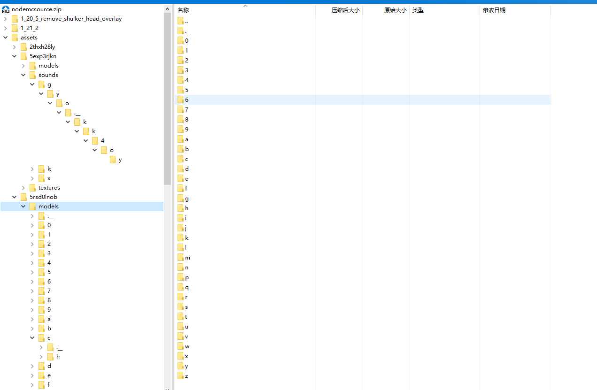
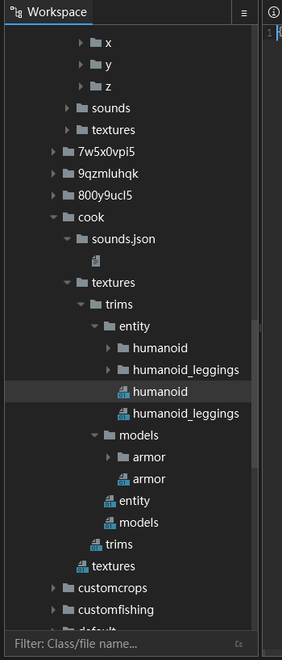
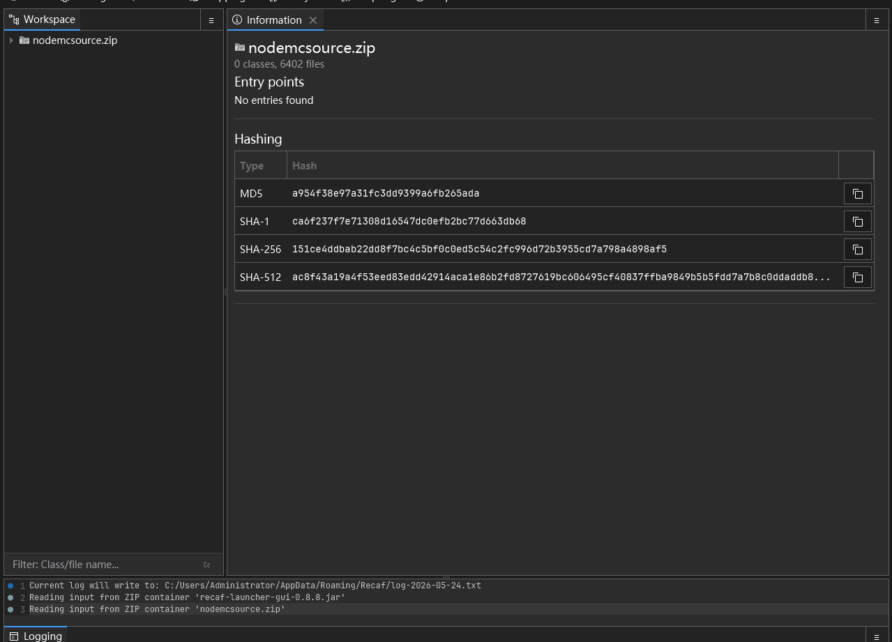
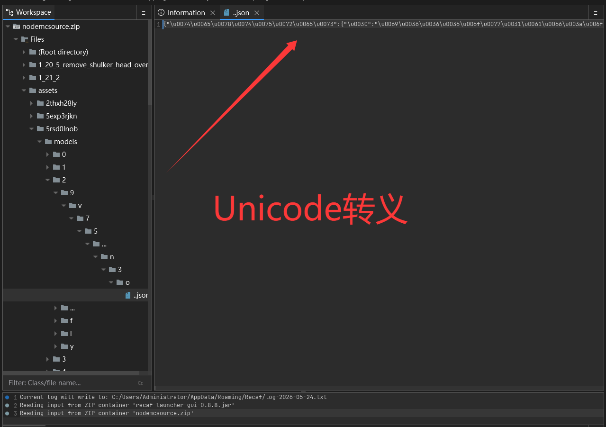
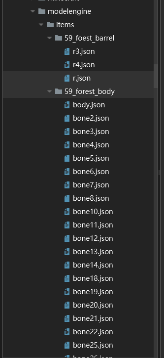
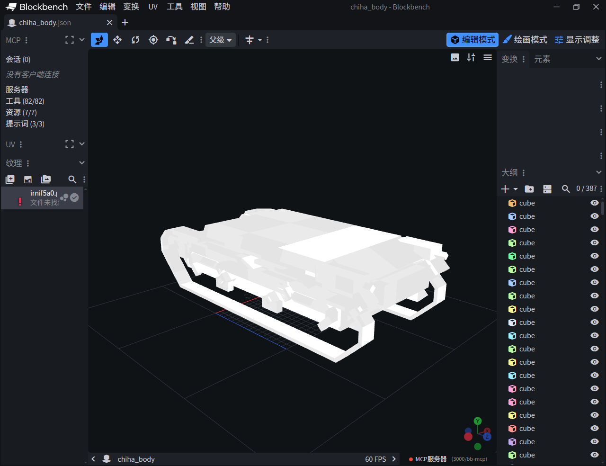
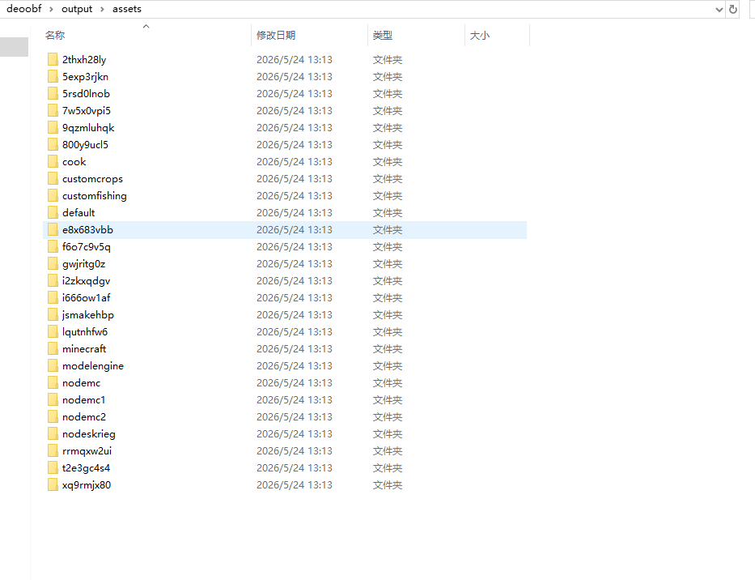

直接使用 7-Zip 解压时的报错：系统找不到指定路径
NodeMC ResourcePack Reverse Engineering — Full Process Documentation
本文记录了对 NodeMC 所使用的 CraftEngine Pro 资源包保护方案的完整逆向过程。
目标文件为 nodemcsource.zip，一个经过 CraftEngine Pro 混淆处理的 Minecraft 资源包。
压缩包源文件由神秘人提供，如Nodemc后续不向玩家提供资源包，Anyuanteam或许会考虑使用wireshark进行源站抓包。 破解用时：19分26秒（19min26s），破解人数一人，由MouseLQ单人破解
本文给出了一套针对 CraftEngine Pro 资源包保护方案的完整还原方案。在路径还原层，通过直接读取 ZIP Central Directory 绕过 Windows MAX_PATH 限制，设计路径压缩算法合并单字符与随机目录、移除混淆标记并修复双点扩展名。在编码还原层，通过递归 Unicode 转义解码与多重编码检测，恢复 JSON 文件的可读性。在引用还原层，识别纹理引用与模型引用两类混淆模式，分别设计压缩算法将运行时动态映射的混淆路径还原为可读短格式。在模型还原层，基于 ModelEngine 的 composite/model 引用拓扑，设计递归解析与 elements 合并算法，将碎片化的 Cube Split 模型重建为完整几何体。本文同时梳理了路径爆炸、命名空间随机化、Cube Split 等混淆手段的演进关系，补完了 CraftEngine Pro 保护体系的完整技术图景。 相较于现有依赖手工解压与逐文件肉眼辨读的分析方式，本工作从路径结构、编码混淆、引用关系与模型几何四个维度建立了完整的技术图景，验证了"客户端必须能正常渲染"这一根本约束下，任何客户端侧的混淆方案最终都可被穿透。本文可为 Minecraft 资源包安全分析、商业 ResourcePack 逆向研究，以及基于混淆的 DRM 系统设计参考提供方法论支持。
与传统意义上的"资源加密"不同，CraftEngine Pro 的保护体系更倾向于：
其设计目标并不是：
"绝对防止资源被读取"
而是：
"显著提高 ResourcePack 的逆向与二次修改成本，使普通用户无法直接提取和修改资源"
本文将从零开始，逐步记录完整的破解过程，包括每一个遇到的问题、分析思路和解决方案。
目标：nodemcsource.zip，一个 CraftEngine Pro 处理过的 Minecraft 资源包。
首先尝试常规方式打开：
直接使用 7-Zip 解压时的报错：系统找不到指定路径
既然无法正常解压，那就绕过文件系统。Python 的 zipfile 模块可以直接读取 ZIP 的 Central Directory，获取所有条目信息而无需真正解压到磁盘。
import zipfile
z = zipfile.ZipFile('nodemcsource.zip', 'r')
names = z.namelist()
print(f"Total entries: {len(names)}")
结果：6146+ 个条目，ZIP 本身可以正常读取，说明没有使用 ZIP 加密。
通过遍历 ZIP 条目名，发现以下关键特征：
| 特征 | 观察 |
|---|---|
| 混淆标记 | 大量路径包含 ...（三个点）作为目录名 |
| 超深路径 | 最大路径深度达 15 层 |
| 单字符目录 | 大量 a/、b/、c/ 等单字符目录名 |
| 混淆扩展名 | 文件扩展名为 ..json、..png、..ogg |
| 随机命名空间 | 如 7w5x0vpi5、2thxh28ly、lqutnhfw6 等 |
| 路径长度 | 最大路径长度远超 Windows MAX_PATH (260) |

ZIP 内部文件树的原始面貌：大量随机目录名、超深层级、无语义路径
混淆前（ZIP 内原始路径）：
assets/7w5x0vpi5/textures/obf/r/2/9/t/t/.../h/0/8/..png assets/2thxh28ly/models/a/b/c/d/e/f/g/h/.../i/j/..json assets/gwjritg0z/models/r/1/m/.../i/8/2/l/1/..json
理想输出：
assets/7w5x0vpi5/textures/obf/r29tth08.png assets/2thxh28ly/models/abcdefghij.json assets/gwjritg0z/models/r1mi82l1.json
最根本的问题是：这些路径无法被写入 Windows 文件系统。Windows 的 MAX_PATH 限制为 260 个字符，而 ZIP 中的路径动辄 300+ 字符。
zipfile.ZipFile.read() 在内存中读取文件内容，再以压缩后的短路径写入磁盘。

ZIP 中少量未混淆的内容（如 pack.mcmeta），证明 ZIP 本身无加密

通过工具分析 ZIP 内部结构：Central Directory 可正常读取，文件哈希完整
# 绝不使用 extractall()，全部在内存中处理
z = zipfile.ZipFile('nodemcsource.zip', 'r')
for entry in z.namelist():
raw = z.read(entry) # 内存中读取
compact = compact_path(entry) # 压缩路径
# 以短路径写入磁盘
write_file(compact, raw)
路径压缩是整个反混淆的核心。需要识别哪些目录是有语义的（应保留），哪些是混淆填充（应合并）。
Minecraft 资源包有固定的目录结构约定。以下目录名具有实际语义，必须保留：
SEMANTIC_DIRS = {
"assets", "models", "textures", "item", "block", "font",
"shaders", "sounds", "blockstates", "atlases", "lang",
"particles", "equipment", "misc", "obf", "core", "include",
"entity", "humanoid", "humanoid_leggings", "trims",
"armor", "custom",
}
同时保留 Minecraft 标准命名空间：
MC_NAMESPACES = {"minecraft", "modelengine"}
对于不在语义目录列表中的目录名，使用启发式规则判断是否为混淆产物：
a、b、c 等）→ 必定是混淆
def looks_random(name):
if len(name) <= 1: return True
if name in SEMANTIC_DIRS: return False
if re.match(r'^[a-z0-9]+$', name):
vowels = sum(1 for c in name if c in 'aeiou')
if len(name) > 3 and vowels / len(name) < 0.2:
return True
if len(name) <= 10: return True
return False
完整的 compact_path() 流程：
CraftEngine 将文件扩展名从 .json 改为 ..json，.png 改为 ..png，这是一种"双点扩展名"混淆。
# 修复映射表 '..png.mcmeta' -> '.png.mcmeta' # 必须在 ..png 之前匹配 '..json' -> '.json' '..png' -> '.png' '..ogg' -> '.ogg' '..mcmeta' -> '.mcmeta' '..fsh' -> '.fsh' '..vsh' -> '.vsh' '..glsl' -> '.glsl'
...路径中的 ...（三个点）是 CraftEngine 的混淆标记，表示"此处有更多随机目录"。直接移除。
# 移除前: assets/x/models/a/.../b/.../c/..json # 移除后: assets/x/models/a/b/c/..json cleaned = [p for p in parts if p != '...']
将连续出现的随机目录名拼接合并，遇到语义目录则停止合并。
# 合并前: assets/7w5x0vpi5/textures/obf/r/2/9/t/t/h/0/8/..png # 合并后: assets/7w5x0vpi5/textures/obf/r29tth08.png
如果合并后的字符串超过 12 个字符，则以 8 字符为单位分组：
# r29tth08xyzabc -> r29tth08/xyzabc
混淆后的文件名可能仅仅是扩展名（如 .json），没有 basename。此时使用最后合并的随机目录段作为文件名。
# 原始: assets/x/models/a/b/c/..json # 扩展名修复后: assets/x/models/a/b/c/.json # 合并随机段后: assets/x/models/abc/.json # 空basename修复: assets/x/models/abc.json
file_size=0 的条目如 assets、1_21_2 等，它们是目录标记，不是真正的文件。如果将其作为文件写入，会与后续需要创建的目录冲突。
file_size==0 且没有有效扩展名的条目。
info = z.getinfo(entry)
fname = entry.split('/')[-1]
has_ext = '.' in fname and not fname.startswith('.')
if info.file_size == 0 and not has_ext:
continue # 跳过目录标记
assets，file_size=0 但 compress_size=2）被当作文件写入后，os.makedirs() 创建 assets/ 目录时失败，因为同名文件已存在。
# 如果文件阻挡目录创建
if os.path.exists(parent) and not os.path.isdir(parent):
os.remove(parent)
# 如果目录阻挡文件写入
if os.path.isdir(out_path):
shutil.rmtree(out_path)
assets/cook/sounds.json/ 这样的条目，尾部有 /，被当作目录，实际是文件。
entry_name = entry.rstrip('/')
UnicodeEncodeError。
[!]、[OK]。
output/CraftEngine 将 JSON 中的字符串值进行 Unicode 转义编码，使人工阅读极为困难。
混淆后的 JSON：
{
"\u0070\u0061\u0072\u0065\u006e\u0074":
"\u006d\u0069\u006e\u0065\u0063\u0072\u0061\u0066\u0074:
\u0069\u0074\u0065\u006d/
\u0067\u0065\u006e\u0065\u0072\u0061\u0074\u0065\u0064"
}
解码后的 JSON：
{
"parent": "minecraft:item/generated"
}

实际 JSON 文件中的 Unicode 转义：所有关键字符串均被 \uXXXX 编码遮蔽
Python 的 json.loads() 会自动解码一层 \uXXXX，但 CraftEngine 使用了双重编码（\\uXXXX），因此解码后仍然包含字面的 \uXXXX 字符。
先 json.loads() 解析 JSON，然后递归遍历所有字符串，使用正则表达式 \u([0-9a-fA-F]{4}) 匹配并替换残留的 Unicode 转义序列。为防止多重编码，循环最多执行 5 轮。
def _try_decode_unicode_escapes(s):
pattern = re.compile(r'\\u([0-9a-fA-F]{4})')
def replacer(m):
return chr(int(m.group(1), 16))
if '\\u' not in s:
return s
result = pattern.sub(replacer, s)
# 处理多重编码
for _ in range(5):
if '\\u' not in result: break
new_result = pattern.sub(replacer, result)
if new_result == result: break
result = new_result
return result
所有 JSON 文件中的 Unicode 转义均被解码为可读文本。6146 个文件中的所有 JSON 均已被自动处理。
解压和路径压缩后，JSON 文件内部的引用仍然指向混淆路径。例如：
// 模型 JSON 中的纹理引用
{
"textures": {
"0": "7w5x0vpi5:obf/r/2/9/t/t/.../h/0/8/.",
"1": "2thxh28ly:obf/a/3/c/.../b/7/."
}
}
// blockstate 中的模型引用
{
"model": "gwjritg0z:r/1/m/.../i/8/2/l/1/."
}
这些引用使用与 ZIP 路径相同的混淆模式，但格式不同：
namespace:obf/单/字/符/.../路/径/.（尾部有 .）namespace:r/单/字/符/.../路/径/.（无 obf/ 前缀）纹理引用的压缩逻辑与路径压缩类似，但针对引用格式做了专门处理：
原始引用：
"7w5x0vpi5:obf/r/2/9/t/t/.../h/0/8/."
压缩后：
"7w5x0vpi5:tex/r29tth08"
处理步骤：
7w5x0vpi5 和 obf/r/2/9/t/t/.../h/0/8/.obf/ 前缀.... 标记/ 分割并合并所有单字符段：r29tth08tex/ 前缀标识
模型引用格式略有不同，没有 obf/ 前缀，但压缩逻辑一致：
原始引用：
"gwjritg0z:r/1/m/.../i/8/2/l/1/."
压缩后：
"gwjritg0z:mdl/r1mi82l1"
_rewrite_tex_refs() 递归遍历 JSON 对象，对以下内容进行重写：
"textures" 字典中的纹理引用:/.../ 模式的引用（模型或纹理）
def _rewrite_tex_refs(obj, tex_ref_map):
if isinstance(obj, dict):
result = {}
for k, v in obj.items():
if k == 'textures' and isinstance(v, dict):
# 重写纹理字典
new_tex = {}
for tk, tv in v.items():
if isinstance(tv, str) and 'obf/' in tv:
new_tex[tk] = _compact_tex_ref(tv)
else:
new_tex[tk] = _rewrite_tex_refs(tv, tex_ref_map)
result[k] = new_tex
else:
result[k] = _rewrite_tex_refs(v, tex_ref_map)
return result
elif isinstance(obj, str):
# 检测模型/纹理引用模式
if ':' in obj and '/.../' in obj:
if 'obf/' in obj:
return _compact_tex_ref(obj)
else:
return _compact_model_ref(obj)
return obj
# ...
在分析过程中发现了一个重要事实：JSON 中的混淆纹理引用（830 个不同引用）与 ZIP 中的实际纹理文件（64 个 textures/obf/ 条目）之间没有直接的映射关系。
这意味着纹理引用是运行时动态解析的。CraftEngine 在客户端运行时维护了一个内部映射表，将 ns:obf/r/2/9/... 这样的引用映射到实际的纹理资源。
ns:tex/r29tth08），便于后续分析。
在 output/assets/modelengine/items/ 目录下发现了 ModelEngine 的模型结构。每个实体模型被拆成多个 part 文件：
assets/modelengine/items/t34_green/
body.json -> composite, 引用多个子模型
turret.json -> 单个模型引用
barrel.json -> 单个模型引用
...（可能有更多 part）
每个 part 文件内部结构：
// body.json (composite 类型)
{
"model": {
"type": "minecraft:composite",
"models": [
{ "model": "jsmakehbp:mdl/0pj2plu7" },
{ "model": "jsmakehbp:mdl/k9x1m2qp" },
{ "model": "5rsd0lnob:mdl/prpuogrt" }
]
}
}
// turret.json (model 类型)
{
"model": {
"type": "minecraft:model",
"model": "5rsd0lnob:mdl/xyz123ab"
}
}
而被引用的模型文件分散在不同的命名空间下：
assets/jsmakehbp/models/0pj2plu7.json -> 包含实际 elements assets/jsmakehbp/models/k9x1m2qp.json -> 包含实际 elements assets/5rsd0lnob/models/prpuogrt.json -> 包含实际 elements (33159 行!) assets/5rsd0lnob/models/xyz123ab.json -> 包含实际 elements
这种拆分导致：

ModelEngine 的 Cube Split 拆分：一个完整模型被分解为多个碎片 part 文件
核心思路：递归解析所有模型引用，收集所有 elements，合并到单个 JSON 文件。
扫描 assets/modelengine/items/ 下所有子目录，每个子目录代表一个完整模型。
对每个 part 文件，根据类型递归展开：
minecraft:model → 单个引用，读取对应 JSON 的 elementsminecraft:composite → 多个引用，逐个展开使用 visited 集合防止循环引用，最大递归深度限制为 20。
从每个被引用的模型 JSON 中提取 elements 数组和 textures 映射。为每个 element 标注来源信息：
{
"from": [-8, 0, -8],
"to": [8, 16, 8],
...
"_part": "turret", // 来自哪个 part
"_source": "5rsd0lnob:mdl/xyz" // 来自哪个模型引用
}
不同 part 的纹理 key 可能冲突。使用 partname.key 格式避免冲突：
"textures": {
"0": "ns:tex/abc123",
"turret.0": "ns:tex/def456", // turret part 的 texture#0
"barrel.0": "ns:tex/ghi789" // barrel part 的 texture#0
}
将合并后的模型写入 merged_models/ 目录，同时生成 _index.json 索引文件。
关键问题：如何将引用如 jsmakehbp:mdl/0pj2plu7 转换为实际的文件路径？
由于第一阶段已经完成了路径压缩，引用也被压缩过，因此解析逻辑为：
def resolve_model_ref(ref, output_dir):
# "jsmakehbp:mdl/0pj2plu7"
ns, path = ref.split(':', 1) # ns="jsmakehbp", path="mdl/0pj2plu7"
model_name = path[4:] # "0pj2plu7"
return os.path.join(output_dir, 'assets', ns, 'models', f'{model_name}.json')
# -> output/assets/jsmakehbp/models/0pj2plu7.json
merged_models/merged_models/_index.json典型合并结果示例：
| 模型 | Parts | Elements | Textures |
|---|---|---|---|
| m4a3_forest_body | 多个 | 大量 | ~723 KB |
| biplanerussian | 1 | 大量 | ~712 KB |
| battleship_body | 1 | 大量 | ~611 KB |

合并后的 ModelEngine 模型文件：所有 elements 集中在单一 JSON 中，可读性大幅提升
通过 ZIP 条目分析，发现以下命名空间：
| 命名空间 | 类型 | 说明 |
|---|---|---|
minecraft | 标准 | Minecraft 原版命名空间 |
modelengine | 标准 | ModelEngine 插件命名空间 |
cook | 特殊 | 可能用于自定义音效/资源 |
7w5x0vpi5 | 混淆 | 10 字符随机命名空间，主要存放纹理 |
2thxh28ly | 混淆 | 10 字符随机命名空间，主要存放模型 |
lqutnhfw6 | 混淆 | 10 字符随机命名空间 |
i2zkxqdgv | 混淆 | 10 字符随机命名空间 |
jsmakehbp | 混淆 | 9 字符随机命名空间，主要存放模型 |
gwjritg0z | 混淆 | 10 字符随机命名空间，主要存放模型 |
xq9rmjx80 | 混淆 | 10 字符随机命名空间 |
5rsd0lnob | 混淆 | 10 字符随机命名空间，存放大型模型 |
最终形成两个 Python 脚本，构成完整的反混淆工具链：
| 功能 | 说明 |
|---|---|
| ZIP 内存读取 | 绕过文件系统，直接读取 ZIP Central Directory |
| 路径压缩 | 合并随机目录、移除混淆标记、修复扩展名 |
| Unicode 解码 | 递归解码 JSON 中的 \uXXXX 转义序列 |
| 引用重写 | 压缩纹理引用和模型引用为可读格式 |
| 映射输出 | 生成路径映射表、引用关系图、分析报告 |
使用方法：
python deobf.py # 默认: nodemcsource.zip -> output/ python deobf.py -i mypack.zip -o result # 自定义输入/输出 python deobf.py -v # 详细输出模式
输出文件：
output/ — 反混淆后的完整资源树output/_path_mapping.json — 原始路径 → 压缩路径映射output/_reverse_mapping.json — 压缩路径 → 原始路径映射output/_references.json — 纹理/模型引用关系图output/_report.txt — 人类可读的分析报告| 功能 | 说明 |
|---|---|
| Part 遍历 | 扫描 modelengine/items/ 下所有模型目录 |
| 递归引用解析 | 支持 minecraft:model 和 minecraft:composite |
| Elements 合并 | 将所有碎片模型的 elements 合并到单文件 |
| 来源标注 | 每个 element 标注 _part 和 _source |
| 纹理合并 | 合并纹理映射，处理 key 冲突 |
使用方法：
python merge_models.py # 默认: output/ -> merged_models/ python merge_models.py -i output -o merged # 自定义输入/输出 python merge_models.py -v # 详细输出模式
输出文件：
merged_models/*.json — 每个模型的合并后 JSONmerged_models/_index.json — 所有模型的索引
nodemcsource.zip
|
v
[deobf.py] ─── ZIP内存读取 → 路径压缩 → Unicode解码 → 引用重写 → 文件写入
|
v
output/ ─── 完整资源树 (6146 files)
| ├── assets/7w5x0vpi5/... (纹理)
| ├── assets/2thxh28ly/... (模型)
| ├── assets/modelengine/... (ModelEngine)
| ├── assets/minecraft/... (原版)
| ├── _path_mapping.json
| ├── _reverse_mapping.json
| ├── _references.json
| └── _report.txt
|
v
[merge_models.py] ─── 遍历modelengine/items → 递归解析引用 → 合并elements
|
v
merged_models/ ─── 合并后模型 (87 models, 8430 elements)
├── t34_green_body.json
├── battleship_body.json
├── m4a3_forest_body.json
├── ...
└── _index.json
根据逆向分析，CraftEngine Pro 使用了以下混淆技术：
| # | 技术 | 原理 | 本文解决方案 |
|---|---|---|---|
| 1 | 路径爆炸 | 使用大量单字符目录制造超深路径 | 路径压缩算法，合并连续随机目录 |
| 2 | 文件系统攻击 | 路径超 Windows MAX_PATH，无法解压 | ZIP 内存读取，绕过文件系统 |
| 3 | 双点扩展名 | .json → ..json，隐藏真实文件类型 | 扩展名修复映射表 |
| 4 | 混淆标记 | 路径中的 ... 目录名 | 识别并移除混淆标记 |
| 5 | 命名空间随机化 | 10字符随机串作为命名空间 | 保留原始命名空间，建立映射 |
| 6 | Unicode 编码 | JSON 字符串值使用 \uXXXX 编码 | 递归 Unicode 解码（最多5轮） |
| 7 | 纹理引用混淆 | ns:obf/r/2/9/.../h/0/8/. | 引用压缩：ns:tex/r29tth08 |
| 8 | 模型引用混淆 | ns:r/1/m/.../i/8/2/l/1/. | 引用压缩：ns:mdl/r1mi82l1 |
| 9 | Cube Split | 将完整模型拆成数十个碎片文件 | 递归引用解析 + elements 合并 |
| 10 | 空文件名 | 文件名仅为扩展名，无 basename | 使用合并段作为 basename |
| 11 | 尾部斜杠 | 文件条目名以 / 结尾 | 处理前剥离尾部斜杠 |
| 12 | 伪文件条目 | 目录标记被存为文件条目 | 跳过 file_size=0 的无扩展名条目 |
CraftEngine Pro 的保护体系属于 Obfuscation（混淆），而非 Encryption（加密）。
因为：
最终，客户端必须能正常渲染这些资源，这意味着：
只要 Minecraft 客户端能够正常加载和渲染，逆向恢复就始终存在理论可能性。
尽管大部分混淆已被破解，仍有以下问题尚未完全解决：
7w5x0vpi5 这样的命名空间的原始含义未知
反编译后部分文件仍含混淆引用，但可读性已足够进行分析与修改
CraftEngine Pro 的保护体系确实显著提高了逆向成本：
本文开发的工具链将逆向成本从中级技术人员的"数天手动分析"降低到了"数分钟自动化处理"。 希望开发出的Py文件能够帮助到部分人
NodeMC ResourcePack Reverse Engineering — Full Process Documentation
CraftEngine Pro Deobfuscation Toolchain v1.0
Generated from deobf.py & merge_models.py